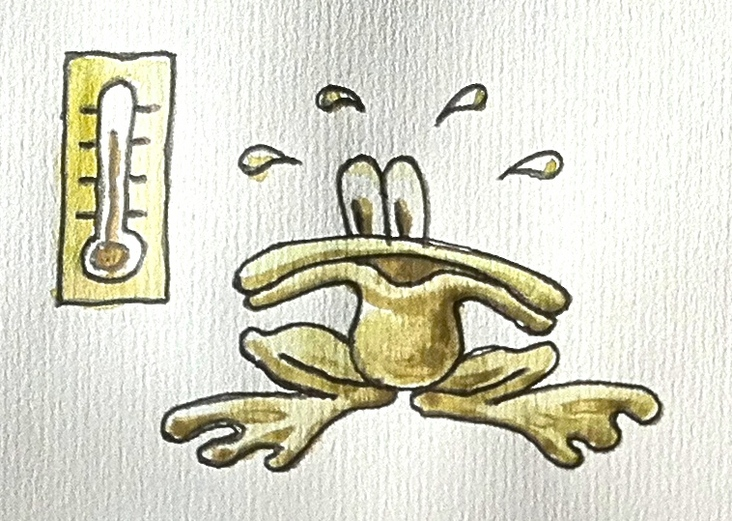
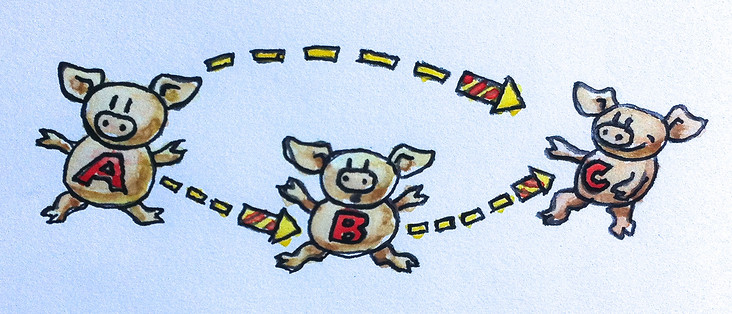

1. 序
我打算为程序猿们写一本讲范畴论的书已经有一段时间了。注意，受众不是计算机科学家，而是程序猿——是工程师，而不是科学家。这听起来挺疯狂，我也有些诚惶诚恐，但是我无法容忍科学与工程之间存在着巨大的鸿沟，更何况我自身的工作也是经常需要我在这两个世界中穿梭。不过，要解释一些东西，总让我感觉非常窘迫。我非常敬仰 Richard Feynman（理查德·费恩曼），在讲授知识方面他是深入浅出的大师。我不是 Feynman，但我会尽力。我从发布这篇序言开始，激励读者学习范畴论，希望能引发一些讨论并得到一些反馈意见。
下面我要用几段文字让你相信，这本书是写给你的。根本没必要担心它是几乎会耗尽你所有的业余时间的一门最抽象的数学。
我的乐观来自一些观察。首先，范畴论是相当有用的编程思想宝藏。Haskell 程序猿们已经涉足此境很久了，其中的一些思想正慢慢的渗入其他语言，只是这一过程是非常缓慢而已，我们需要使之加速。
其次，有许多种数学，它们面向不同受众。你可能不喜欢代数学，但这并不意味这你无法喜欢范畴论。我会向你展示，范畴论非常适合程序猿的思维。因为范畴论处理的对象不是计算细节，而是结构。它处理的是使程序可复合的结构。
复合是范畴论的精髓，它也是范畴论自身定义的一部分。我会证明编程的本质是『复合』。我们一直都在组合一些东西，这种行为从很久以前一群伟大的工程师提出子程序的时代就开始了。很久以前，结构化编程原理掀起了编程的革命，它立足于代码级别的复合。伴随面向对象编程而来的则是对象的复合。函数式编程不仅仅设计函数的复合与代数数据结构，它还提供了对并发计算的支持，这是其他编程范式难以实现的。
第三，我有秘密武器，一把庖丁之刀，我要用它将数学大卸八块使之成为程序猿的美味佳肴。如果你是数学家，你不得不大胆假设，小心求证，严格的构造你的定理，然后产生令外人难以卒读的论文与专著。我是训练有素的物理学家，在物理学中，我们使用着并不正规的推理来取得令人激动的发现。数学家们嘲笑伟大的物理学家 P. A. M. Dirac 为求解一些微分方程而提出的狄拉克 δ 函数，但是当他们发现了一个叫做广义函数论的新的数学分支时，他们就不笑了，因为广义函数论只是对 Dirac 观点的一种形式化描述。
当然，采用不严肃的论证方式很容易产生谬论。因此在这本书中凡是遇到不正式的论证时我会尽力确定其背后存在着相应的实际数学理论。我床头有一本被我翻的破破烂烂的 Saunders Mac Lane 写的《Category Theory for the Working Mathematician》。
由于这本书是写给程序猿的范畴论，因此我将会用计算机程序代码展现范畴论的主要概念。你可能会担心函数式语言会比传统的命令式语言更接近数学，并认为前者为此已经提供了更多的抽象能力，所以想当然的认为只有学习了 Haskell 方能将范畴论的能量作用于现实，或者认为范畴论在函数式编程范式之外没有什么用处，这些看法并不正确。我会提供大量的 C 的例子，只不过你得容忍一些丑陋的语法，需要在繁琐的代码中探寻清晰的模式，并且在更高层抽象的场合不得不做一些复制与粘贴的工作，不过这也正是大部分 C 程序员经常干的事。
不过，你也无法脱离 Haskell 的羁绊。虽然没有必要成为一名 Haskell 程序猿，但你需要将 Haskell 作为一种草图性的语言，用于描述那些 C 示例的实现思想。这也正是我当初开始学习 Haskell 的所用的方法。Haskell 简洁扼要的语法与强大的类型系统，对于理解与实现 C 模板、数据结构与算法非常有帮助。当然，我不可能要求读者事先以已经了解 Haskell，我会逐步介绍 Haskell 的知识，并且会对我所用到的那部分 Haskell 代码给出详细的解释。
如果你是一名有经验的程序员，可能会自问：即使不懂范畴论与函数式方法，我也照样写代码，似乎没什么必要学习它们。的确如此，不过你无法阻止正在侵入命令式语言的那股沉稳的函数式潮流。即使是 Java，面向对象编程的坚固堡垒，也拱手请来了 Lambda。C++ 也正在大踏步前进，现在每隔三五年就发布一个新标准，它正在尝试赶上这个正在变化的世界。这一切都在为一场变革而准备，这种变革，用我们物理学家的术语可称为相变。如果你持续的烧水，它最终会沸腾。我们现在正处于青蛙的位置，必须决定是在升温的水中继续游动，还是开始作出其他抉择。

驱动编程范式产生巨大变革的力量之一是多核革命。主流的编程范式——面向对象编程已经难以胜任并发与并行计算领域，它只会造成危险且充满 bug 的设计。数据隐藏，是面向对象的基本前提，一旦对象被共享且被修改，就会造成数据竞争。将数据与互斥锁组合起来看似是个不错的解决方案，但不幸的是，互斥锁不能组合，并且一旦在数据竞争中出现死锁，程序非常难以调试。
对于非并发计算，软件系统日益递增的复杂度也正在炙烤着命令式编程范式。简而言之，副作用正在失去控制。有副作用的函数很便捷又易于编写。原则上，有副作用的函数所产生的影响可在函数名以及注释中予以标明。一个叫做 SetPassword 或 WriteFile 的函数显然在修改某种状态并产生副作用，对此我们已经非常习惯且不以为然。只有当我们开始将这些有副作用的函数层层组装到一起，事情才开始变得棘手。副作用本身并不坏，但是将它们塞到一个大尺度视图中，我们很难再看清它们，它们便脱离了我们的掌控。完全与副作用打交道的命令式编程范式才是元凶。
硬件的变化与软件复杂度的增长都在迫使我们重新思考编程的根本思想。正如欧洲最宏伟的哥特式大教堂的建造者那样，我们正在面对着原料与结构的限制而磨砺着我们的技艺。法国的博韦有一座未完工的哥特式教堂，它就是人类与限制作斗争的见证。这座教堂的设计企图在高度与采光方面击败所有的教堂，但是建造中却出现了一系列的崩塌。当时不得不用钢梁木柱临时做成支撑架构来阻止崩塌，但于事无补，因为很多东西在设计上就是错的。从现代的视角来看，博韦教堂是个奇迹，其相当多的一部分哥特式结构已经成功的建造了出来，这在那个没有现代材料科学、计算机建模、有限元分析甚至没有普通的数学与物理的时代显得有些不可思议。我期望我们的后代也会敬佩我们在构建复杂的操作系统、网络服务器以及互联网架构中展现出来的技术。毫不客气的说，他们理应如此，因为我们是在脆弱的理论基础上完成的这一切。但是，如果我们想继续前进，那么就必须修正现有的理论基础。
2. 范畴：复合的本质
上一篇文章，即《写向程序猿的范畴论》的序言，发布之后得到的正面反馈让我有些不知所措。同时，它也激励了我，因为我感受到了大家付诸于我的殷切期望。不过，我担心的是无论我如何努力，依然众口难调。有些读者希望这本书偏于现实，有些人则希望它能抽象一些。有些憎恨 C++ 的人希望所有的示例都是 Haskell 的，而那些憎恨 Haskell 的人又希望示例是 Java 的。我还知道内容的进展对于有些人可能太慢了，而对于有些人可能又太快了。这本书可能不会很完美，它会充满着妥协。不过，我只期望能够与大家分享一下我顿悟时的惊喜。我们现在从最基本的东西开始。
范畴是一个相当相当相当简单的概念。一些对象以及对象之间存在的一些箭头就构成了一个范畴。所以，范畴很容易用图形来表示。对象可以画成圆或点，箭头就画成箭头。为了好玩，有时我会把对象画成小猪，将箭头画成焰火。范畴的本质是复合，如果你愿意，也可以说复合的本质是范畴。箭头可以复合，因此如果你有一个从 A 指向 B 的箭头，又有一个从 B 指向 C 的箭头，那么就必定有一个复合箭头——从 A 指向 C 的箭头。

在范畴论中，如果有一个箭头从 A 指向 B，又有一个箭头从 B 指向 C，那么就必定存在一个从 A 指向 C 的箭头，它是前两个箭头的复合。这幅图并非一个完整的范畴，因为它没有自态射（详见后文）。
2.1. 当箭头作为函数的时候
现在你已经凌乱了么？不要绝望。现在来点实在的，将箭头想象为函数，虽然它的学名叫态射。你有一个函数 f，它接受一个 A 类型的值，返回一个 B 类型的值。你还有一个函数 g，它接受一个 B 类型的值，返回一个 C 类型的值。你可以将 f 的返回值传递给 g，这样就完成了这两个函数的复合，你得到的是一个新的函数，它接受一个 A 类型的值，返回一个 C 类型的值。
在数学中，这样的复合可以用一个小圆点连接两个函数来表示，即 g∘f. 注意，复合是从右向左发生的。有些人可能还是有点不理解。你可能熟悉 Unix 中的管道，例如
$ lsof | grep Chrome也可能熟悉 F# 语言中的 >>，它们都是从左向右传递信息的。但是在数学与 Haskell 中，函数的复合是从右向左传递信息。如果你将 g∘f 读作 g after f 可能会有助于理解。
现在我们来写一些 C 代码。我们有一个函数 f，它接受 A 类型的参数值，返回一个 B 类型的值：
B f(A a);还有一个
C g(B b);那么这两个函数的复合，就是：
C g_after_f(A a)
{
return g(f(a));
}这次，你可以看到 C 中的从右向左的的复合：g(f(a))。
我希望 C++ 标准库中存在一个模板，它能够接受两个函数然后返回它们的复合，但是可惜并没有这样的模板。所以我们只能试试 Haskell 了。下面是一个从 A 到 B 的函数的声明：
f :: A -> B类似的还有
g :: B -> C它们复合为：
g . f一旦你见识到 Haskell 是这么的简单，就会觉得 C++ 在函数概念的直接表达方面显得有些无能了。Haskell 也支持使用 Unicode 字符来写函数的复合：
g ∘ f也可以使用 Unicode 字符来写冒号与箭头：
f ∷ A → B这就是我们的 Haskell 第一课：两个冒号的意思是『类型为……』。一个函数的类型是由两个类型中间插入一个箭头而构成的。要对两个函数进行复合，只需在二者之间插入一个 .（或者 Unicode 小圆圈）。
2.2. 复合的性质
在任何范畴中，复合必须满足两个非常重要的性质：
-
复合是可结合的（结合律）。如果你有三个态射，f，g 与 h，它们能够被复合（也就是它们的对象能够首尾相连），那么你就没必要在复合表达式中使用括号。在数学中，可表示为：
h∘(g∘f) = (h∘g)∘f = h∘g∘f在 Haskell 伪代码（之所以说『伪』，是因为 Haskell 没有为函数的相等进行定义）中，可表示为：
f :: A -> B
g :: B -> C
h :: C -> D
h . (g . f) == (h . g) . f == h . g . f对于函数的处理，结合律相当清晰，但是在其他范畴中可能就不这么清晰了。
-
任一对象 A，都有一个箭头，它是复合的最小单位。这个箭头从对象出发又指向对象自身。作为复合的最小单位，意思是当它分别与任何从 A 开始或终止于 A 的箭头复合时，得到的依然是与后者相同的箭头。对象 A 的单位箭头称为 idA，意思是 identity on A，即 A 与自身恒等。在数学表示中，如果 f 从 A 到 B，那么就有
f∘idA = f
以及
idB∘f = f
在处理函数时，恒等箭头就是作为一个恒等函数实现的，这个函数的唯一工作就是直接返回它所接受的参数值。对于所有的类型，都可以这么实现恒等，这意味着这个函数是多态的。在 C++ 中，我们可以以模板的形式来定义它：
template<class T> T id(T x) { return x; }当然，在 C++ 中，实际情况并非如此简单，因为你需要考虑要给这个函数传递什么以及如何传递（通过值，还是通过引用，还是通过常量引用，还是通过 move 语义等等）。
在 Haskell 中，恒等函数是标准库（即 Prelude）中的一部分，其定义如下：
id :: a -> a
id x = x正如你所见，在 Haskell 中多态函数是小菜一碟，在其声明中，你只需要用一个具体的类型来替换掉类型变量即可。这就涉及到一个小把戏：具体的类型，名字总是以一个大写字母开头，而类型变量的名字总是以一个小写字母开头。在此，a 表示所有类型。
Haskell 函数的定义由尾随着形参的函数名构成，这里只有一个形参 x。函数体在 = 号之后。这种简洁扼要的风格经常令新手愕然，但你很快就会发现它的魅力所在。函数的定义与调用是函数式编程的面包与黄油，因此它们的语法被简化到了骨瘦如柴的境地。参数值列表不仅不需要括号，参数值之间也没有逗号（下文在定义多个参数的函数时，就可以看到这些）。
函数体总是由一个表达式构成，亦即函数中没有语句。一个函数的返回结果就是这个表达式本身——在此就是 x。
这就是我们的 Haskell 第二课。
恒等条件可写为（还是伪 Haskell 代码）：
f . id == f
id . f == f可能你会问：为何需要这个什么也不做的恒等函数？其实你应该这样问，为什么需要数字 0？
0 是一个表示无的符号。古罗马人有一个没有 0 的数字系统，他们能够修建出色的道路与水渠，有些直到今天还能用。
类似 0 这样的东西，在处理符号变量的时候特别有用。这就是罗马人不擅长代数学的原因，而阿拉伯人与波斯人因为熟悉 0 的概念，因此他们能够很好的掌握代数学。当恒等函数作为高阶函数的参数值或返回值时，它的价值就会得以体现。高阶函数能够像处理符号那样处理函数，它们是函数的代数。
总结一下：一个范畴由对象与箭头（态射）构成。箭头可以复合，这种复合满足结合律。每个对象都有一个恒等箭头，它是箭头复合的基本单位。
2.3. 复合是编程的本质
函数式程序员在洞察问题方面会遵循一个奇特的路线。他们首先会问一些似有禅机的问题。例如，在设计一个交互式程序时，他们会问：什么是交互？在实现基于元胞自动机的生命游戏时，他们可能又去沉思生命的意义。秉持这种精神，我将要问：什么是编程？在最基本的层面，编程就是告诉计算机去做什么，例如『从内存地址 x 处获取内容，然后将它与寄存器 EAX 中的内容相加』。但是即使我们使用汇编语言去编程，我们向计算机提供的指令也是某种有意义的表达式。假设我们正在解一个难题（如果它不难，就没必要用计算机了），那么我们是如何求解问题的？我们把大问题分解为更小的问题。如果更小的问题还是还是很大，我们再继续进行分解，以此类推。最后，我们写出求解这些小问题的代码，然后就出现了编程的本质：我么将这些代码片段复合起来，从而产生大问题的解。如果我们不能将代码片段整合起来并还原回去，那么问题的分解就毫无意义。
层次化分解与重新复合的过程，并非是受计算机的限制而产生，它反映的是人类思维的局限性。我们的大脑一次只能处理很少的概念。生物学中被广为引用的一篇论文指出我们我们的大脑中只能保存 7± 2 个信息块。我们对人类短期记忆的认识可能会有变化，但是可以肯定的是它是有限的。底线就是我们不能处理一大堆乱糟糟的对象或像兰州拉面似的代码。我们需要结构化并非是因为结构化的程序看上去有多么美好，而是我们的大脑无法有效的处理非结构化的东西。我们经常说一些代码片段是优雅的或美观的，实际上那只意味着它们更容易被人类有限的思维所处理。优雅的代码创造出尺度合理的代码块，它正好与我们的『心智消化系统』能够吸收的数量相符。
那么，对于程序的复合而言，正确的代码块是怎样的？它们的表面积必须要比它们的体积增长的更为缓慢。我喜欢这个比喻，因为几何对象的表面积是以尺寸的平方的速度增长的，而体积是以尺寸的立方的速度增长的，因此表面积的增长速度小于体积。代码块的表面积是是我们复合代码块时所需要的信息。代码块的体积是我们为了实现它们所需要的信息。一旦代码块的实现过程结束，我们就可以忘掉它的实现细节，只关心它与其他代码块的相互影响。在面向对象编程中，类或接口的声明就是表面。在函数式编程中，函数的声明就是表面。我把事情简化了一些，但是要点就是这些。
在积极阻碍我们探视对象的内部方面，范畴论具有非凡的意义。范畴论中的一个对象，像一个星云。对于它，你所知的只是它与其他对象之间的关系，亦即它与其他对象相连接的箭头。这就是 Internet 搜索引擎对网站进行排名时所用的策略，它只分析输入与输出的链接（除非它受欺骗）。在面向对象编程中，一个理想的对象应该是只暴露它的抽象接口（纯表面，无体积），其方法则扮演箭头的角色。如果为了理解一个对象如何与其他对象进行复合，当你发现不得不深入挖掘对象的实现之时，此时你所用的编程范式的原本优势就荡然无存了。
2.4. 挑战
-
用你最喜欢的语言（如果你最喜欢的是 Haskell，那么用你第二喜欢的语言）尽力实现一个恒等函数。
-
用你最喜欢的语言实现函数的复合，它接受两个函数作为参数值，返回一个它们的复合函数。
-
写一个程序，测试你写的可以复合函数的函数是否能支持恒等函数。
-
互联网是范畴吗？链接是态射吗？
-
脸书是一个以人为对象，以朋友关系为态射的范畴吗？
-
一个有向图，在什么情况下是一个范畴？